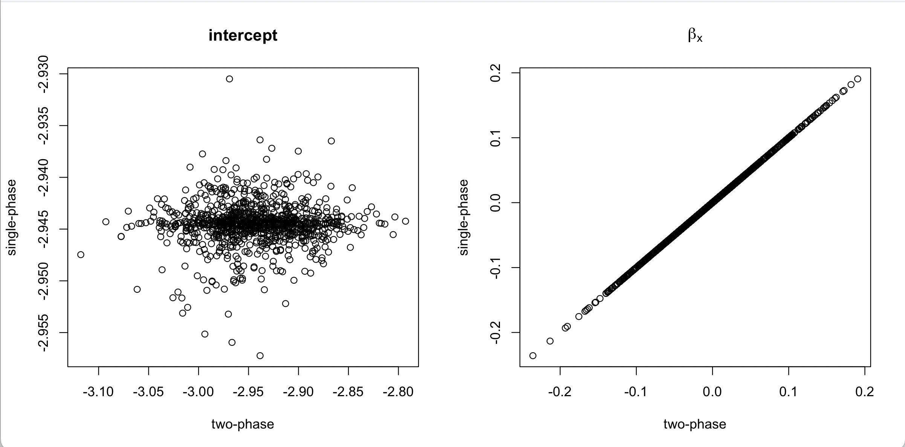

As I have said before, the distinction between multistage and multiphase surveys is mostly important as a shibboleth for survey statisticians.
The two=phase quantities \[\pi_i^*=P(i\text{ sampled}|\text{phase 1})P(i\in\text{phase 1})\] are not the same as the marginal sampling probabilities \[\pi_i=P(i\text{ sampled})\] but one uses them in exactly the same formulas, so the difference doesn’t matter all that much.
It would still be somewhat interesting to know whether using \(1/\pi_i^*\) as weights is better or worse than using \(1/\pi_i\) – usually there isn’t any choice, because \(\pi_i\) aren’t available in a multiphase sample, but interesting in theory.
We can answer this question for nested case-control sampling (and frequency-matched nested case-control sampling). This is a very special case of two-phase sampling, so the answer is less interesting, but the problem is more tractable, at least in simulation.
Imagine we have a cohort of size \(N\) that’s either a simple random sample or Poisson sample from a very large population or an iid realistation from a data-generating process. A rare disease with prevalence \(p\) is observed in this cohort, giving us a binary outcome variable \(Y\). We take a subsample of the \(n\) people with \(Y=1\) and \(n\) of the people with \(Y=0\) and measure \(X\) on them.
The two-phase analysis says the subsampling probability for controls is \(n/(N-n)\): there are \(N-n\) people with \(Y=0\) and we sample \(n\) of them. This is a random variable, because \(n\) is random (it’s the sum over the cohort of \(Y\)). We could also work out the marginal subsampling probability for controls, which is the expected value of \(n/(N-n)\). Strictly speaking, this is infinite because there’s an infinitesimal chance than \(n=N\). We’re going to ignore that approximate the expected value by \(Np/(N-Np)\).
Suppose we do the two-phase analysis with the phase-two probability \(n/(N-n)\) and the single-phase analysis with the true marginal probability \(Np/(N-Np)\). We should get unbiased pseudoscore equations either way, and effectively unbiased estimators of the regression coefficients. How will the standard errors compare? There are basically three possibilities
I ran a simulation, with \(N=10^4\), \(p=0.05\) and standard Normal \(X\), and used logistic regression to model \(Y|X\). For the coefficient of \(X\) the two approaches gave essentially identical results. For the intercept the means were the same but there was much less variability with the one-phase analysis.

The estimated standard errors matched the simulation standard errors pretty well: for the intercept, the single-phase analysis gave a reduction in the standard error by a factor of about twenty, with no change for the coefficient of \(x\).
This isn’t all that exciting: we know the intercept is weird in case-control logistic regression, and we do in fact have a very good phase-one estimate of the prevalence of \(Y=1\). It’s still a bit interesting in that it’s a tractable example showing that the two analysis approaches can differ. The same sort of phenomenon will happen for the coefficients of matching variables in frequency-matched logistic regression for the same reason; they are basically intercepts.